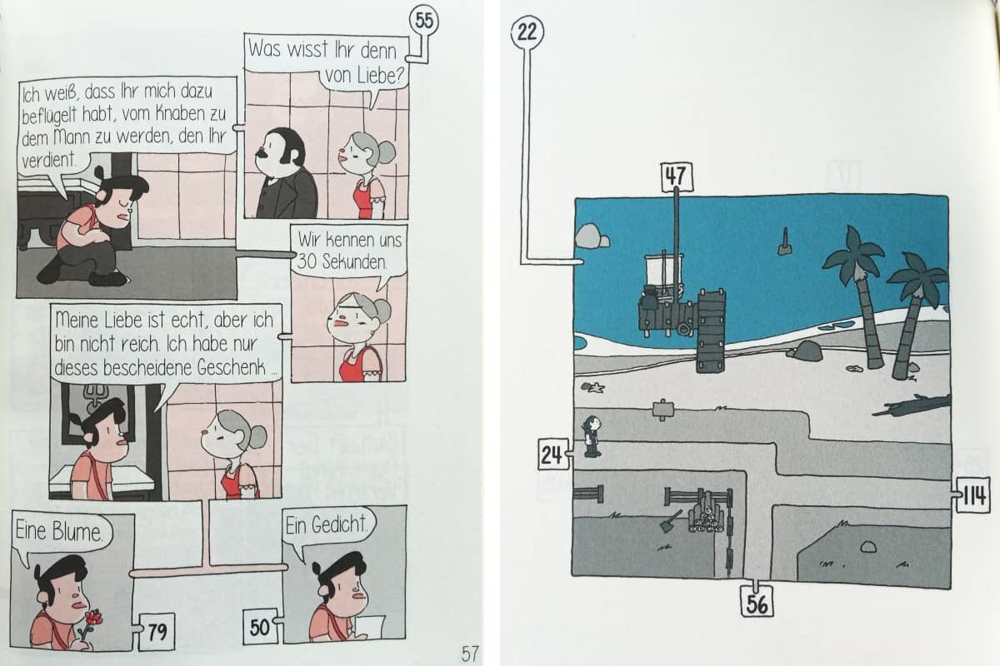

@charak
@charakComics mit Verzweigung
Diesen Sommer habe ich zwei Comics von Jason Shiga gelesen – oder vielmehr: durchgespielt. Es waren nämlich interaktive Bücher, bei denen man immer wieder Entscheidungen trifft.
Comic, Labyrinth und Spiel in einem – so lautet der Untertitel der Adventuregame Comics aus dem Mantikore-Verlag. Man blättert die Bücher nämlich nicht von vorne bis hinten durch, sondern entscheidet beim Lesen immer wieder, wie/wo es weitergehen soll. So springt man im Buch wild hin und her, um einen Handlungsstrang zu verfolgen. Wie das konkret aussieht? Zum Beispiel so:

Tatsächlich empfand ich die Story im ersten Band („Leviathan“) eher wie eine Karte, deren verschiedene Orte man abläuft und Informationen sammelt, um an bestimmten Stellen weiterzukommen (z. B. damit ein Torwächter die Hauptfigur durchlässt). Die Geschichte spielte in einem Städtchen auf einer kleinen Insel. Dort leben die Bewohner in ständiger Angst vor einem Seeungeheuer, das jeden angreift, der eine Lüge erzählt. Die Hauptfigur soll nun einen magischen Gegenstand finden, mit dem das Ungeheuer besiegt werden kann.
Im zweiten Band („Das Jenseits“) verstirbt die Hauptfigur und kommt in einem Wartezimmer wieder zu sich. Dort kann sie in Bücher steigen, deren Handlung beeinflussen und miteinander kombinieren – ziemlich metafiktional, wenn man als Leser:in selbst gerade ein interaktives Buch in der Hand hält.
Keine Hundert Abenteuer
Zwar ist die Handlung verzweigt, aber es sind beileibe nicht Hundert Abenteuer oder gar Enden, wie die kurze Anleitungsseite am Anfang behauptet. Man folgt einer Hauptlinie, wobei die Abschnitte in unterschiedlicher Reihenfolge „erlesen“ werden. Erst kurz vor dem Ende teilt sich die Handlung bei einer finalen Entscheidung in verschiedene Schlussvarianten.
Auch ohne hundert Verzweigungen hat es mir Spaß gemacht, die Geschichte nach und nach zu erkunden, in die ein oder andere Falle zu tappen und durch Zurückblättern die drei, vier verschiedenen Enden zu erkunden. Mir gefiel auch, wie die interaktive Form mit der Geschichte selbst zusammenhing (bei Band 1 geht es ums Lügen/Schummeln, bei Band 2 um interaktive Bücher).
Ein unterhaltsames Spiel in Buchform
Insgesamt hat mir die Mechanik mit den Kartenausschnitten im „Leviathan“ besser gefallen als das Springen mithilfe von Buchnummern im zweiten Band. In beiden Büchern muss man an einer Stelle bewusst die Regeln brechen, um weiterzukommen. Ich weiß nicht genau, wie ich das finden soll, aber es war im Kontext der Handlung absolut stimmig.
Von Jason Shiga gibt es noch einen dritten Adventuregame Comic, der im Moment noch nicht auf Deutsch verfügbar ist. Ich bin aber nicht sicher, ob ich ihn lesen möchte, weil mich seine Thematik „Samuraj/Ninja“ nicht unbedingt anspricht. Am besten gefällt mir wohl der erste Band.
Auf die Adventuregame Comics bin ich übrigens durch eine Video-Empfehlung vom „Spiele Baron“ gestoßen, die ich bei der Recherche zu meinem Blogartikel über Rollenspiele angeguckt habe.
---
Rubrik(en): #kritik